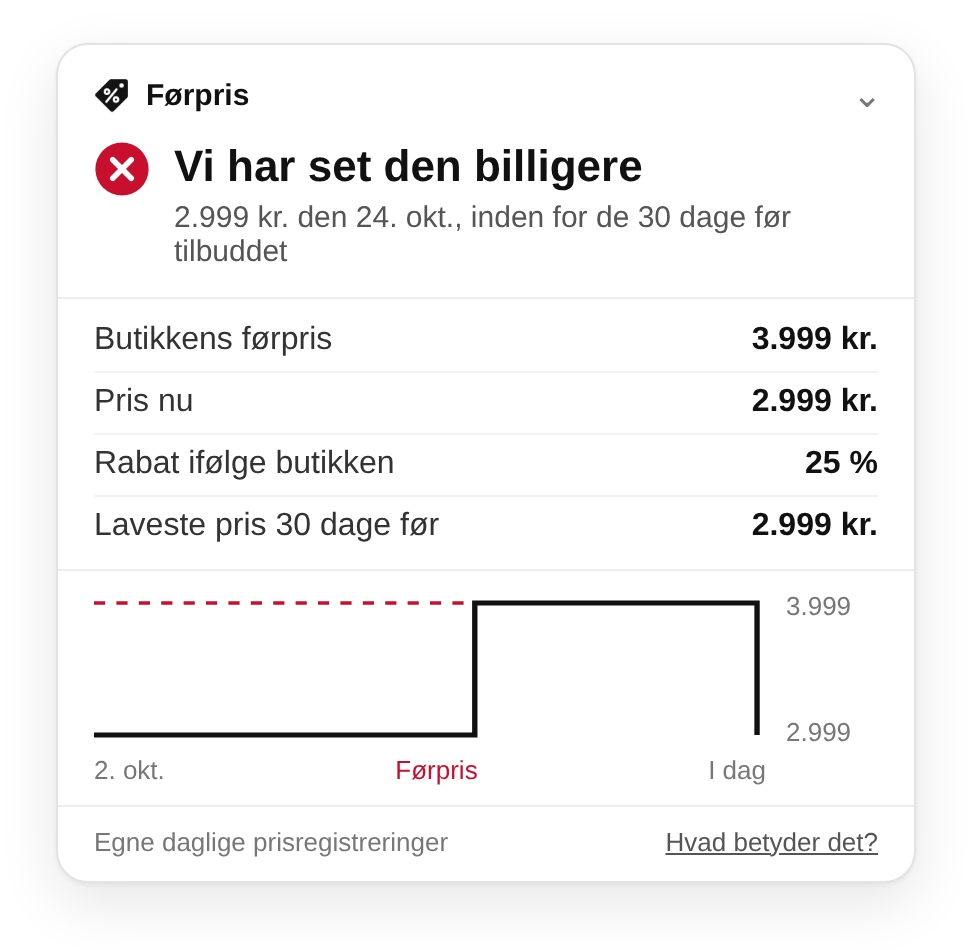

Førpris tjekker, om førprisen holder.
En udvidelse til Chrome og Edge. Når en vare er på tilbud i en dansk webshop, sammenligner den butikkens førpris med de priser, vi selv har registreret dag for dag.
Vi registrerer priser hver dag siden 2. oktober 2026.

Hvad kortet kan sige
| Kortet siger | Det betyder |
|---|---|
| Vi har set den billigere | Vi har registreret en lavere pris end butikkens førpris i de 30 dage før tilbuddet. Kun her åbner kortet af sig selv. |
| Førprisen stemmer | Vi har fulgt varen i alle 30 dage før tilbuddet, og den var ikke billigere end førprisen. |
| Ingen lavere pris set | Vi har ikke set den billigere, men vi har heller ikke fulgt den i alle 30 dage endnu. |
| Førprisen kan ikke tjekkes endnu | Tilbuddet startede, før vi begyndte at følge prisen. |
| Førprisen kan ikke afgøres | Butikken har tidligere vist en anden førpris på varen, så vi kan ikke sige sikkert, hvornår tilbuddet startede. Så siger vi hverken, at den stemmer, eller at vi har set den billigere. |
| 12 % over laveste pris | Varen er ikke på tilbud. Kortet viser, hvor prisen ligger i forhold til den laveste, vi har set. |
| Billigere hos … | Samme vare med samme stregkode koster mindre i en anden butik lige nu, og den er på lager der. |
Reglen
Når en butik markedsfører en prisnedsættelse, skal førprisen som udgangspunkt være den laveste pris, butikken har haft i de 30 dage før nedsættelsen. Reglen kommer fra EU’s prismærkningsdirektiv (artikel 6a) og gælder også i Danmark.
Førpris siger ikke, at en butik har brudt reglen. Den viser, hvad vi har registreret, så du selv kan vurdere tilbuddet.
Sådan får vi priserne
Vores prisrobot besøger hver dag produktsiderne hos Power, Elgiganten, Bilka, Imerco, Magasin, Matas, Coolshop, Føtex, Harald Nyborg og Jysk. Den gemmer pris, førpris og lagerstatus, oplyser sit navn og en kontaktadresse og respekterer butikkernes robots.txt. Om prisrobotten.
Udvidelsen læser prisen fra den side, du har åben, og henter vores offentlige prisfil for varen. Den sender intet om dig. Priser på varer, du selv ser, gemmes kun i din browser.
Der er grænser for, hvad vi kan se. Vi kender kun de dage, vi har registreret, så mangler vi en dag, kan vi have overset en lavere pris. Hos Bilka, Matas og Harald Nyborg kan vi endnu ikke aflæse førprisen, så dér viser Førpris kun prishistorikken og billigere tilbud andre steder. Medlemspriser og “køb 2”-tilbud tjekker vi ikke.
Førpris-indekset
Hvor stor en del af de varer, vi følger, viser butikken i dag med en overstreget førpris? Tallet opdateres hver dag frem mod Black Friday den 27. november.
Henter data …
Status
Udvidelsen er i test hos en lille gruppe og bliver offentlig i Chrome Web Store før Black Friday. Alle prisdata ligger allerede offentligt på GitHub, så alle kan efterprøve dem.